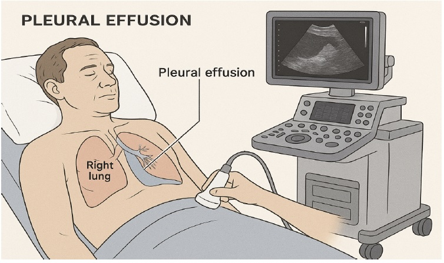
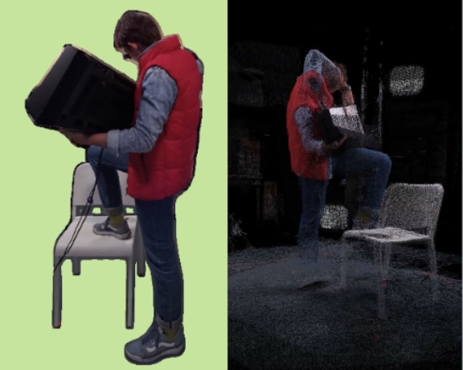
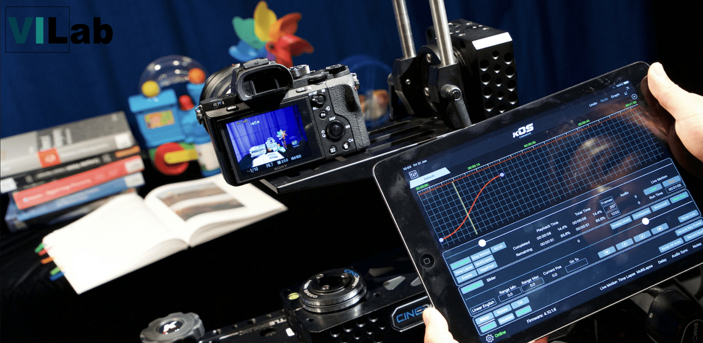
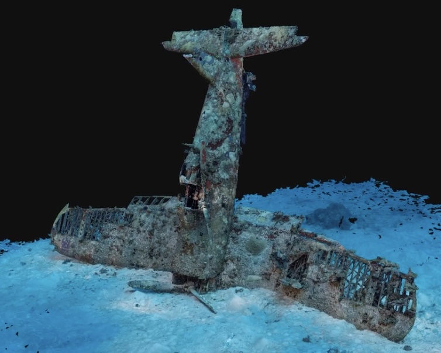
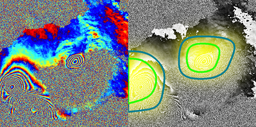
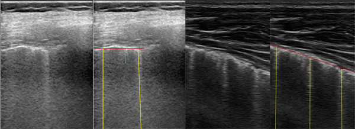
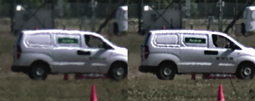

Dr Nantheera Anantrasirichai (Pui)
Associate Professor in Visual Computing
3.20, Merchant Venturers Building, University of Bristol, BS8 1UB, UK
Ongoing Research Projects

From Scan to Insight: Explainable AI for Safer and Smarter Thoracic Ultrasound in Pleural Disease (SITUS)
Pleural effusion, the build-up of fluid around the lungs, affects millions of people worldwide and is commonly associated with conditions such as cancer, heart failure, and lung disease. Thoracic ultrasound (TUS) is the primary tool for diagnosis and treatment guidance, but interpreting scans requires significant expertise. The SITUS project brings together lung specialists and AI researchers to develop a reliable and transparent AI system for thoracic ultrasound interpretation. Designed for real clinical settings, the system aims to support doctors in making more informed decisions and improving patient care.

Com4D: Compressed 4D Representations for Dynamic Scenes
The world is dynamic, yet most visual capture and representation systems are designed for static scenes. While recent advances in 3D reconstruction have been highly successful, efficiently representing and transmitting dynamic 3D content (4D) remains a major challenge due to motion, sparse viewpoints, and large data volumes. This project combines the University of Bristol’s expertise in challenging-scene 3D reconstruction with the video compression expertise of National Chung Cheng University (NCCU) and National Yang Ming Chiao Tung University (NYCU). Together, we will develop efficient methods to capture, compress, and transmit dynamic 3D scenes while reducing storage and bandwidth requirements.

PriorPool: Intelligent Video Restoration and Enhancement via a Large Prior Database
Acquiring high-quality video in challenging conditions, such as low light, heat haze, or adverse weather—is difficult, often resulting in degraded footage that hinders both human and machine interpretation. PriorPool addresses this by leveraging priors from high-quality videos with similar content to guide restoration and enhancement. The project develops an unsupervised framework that tackles blind inverse problems, combining robust content representations, prior retrieval, and context-aware optimisation. By exploiting the knowledge embedded in high-quality videos, PriorPool aims to overcome information loss and the lack of ground truth, enabling more accurate and effective video restoration.

AI based production workflows for Challenging Acquisition Environments
Natural history and other challenging filming environments place extreme demands on camera systems and post-production workflows. Low-light and high-resolution video are particularly susceptible to noise and other distortions, creating a gap between production requirements and hardware capabilities. Effective distortion management is therefore essential, motivating perceptually driven solutions for video denoising, colorization and contrast enhancement. Despite recent advances in machine learning, most research focuses on still images, with relatively limited work and few datasets available for video denoising. This project forms part of MyWorld.

MyUnderwaterWorld: Intelligent Underwater Scene Representation
Underwater environment represents the combination of several challenges. Water is a dynamic medium and suspended particles move. Light scatter causes blur and halo effects, whilst light absorption leads to colour distortion and reduced contrast. The model of underwater imagery should thus comprise temporally- and spatially-variant distortion, uneven intensity bias, multiplicative noise, and additive noise. This project aims to exploit underwater image priors to perform 3D mapping process can be done directly from the raw underwater sequences.
DeepCLEAR: Intelligent Atmospheric Turbulence Removal and Object Recognition
Atmospheric turbulence distorts visual imagery, hindering scene interpretation by both humans and machines. Traditional model-based methods, such as CLEAR, are computationally expensive and unsuitable for real-time operation. While deep learning approaches have shown promise, they are largely limited to static scenes. This project proposes novel learning-based frameworks for atmospheric turbulence mitigation in dynamic scenes. Our objectives are to (i) develop real-time video restoration techniques that reduce spatio-temporal distortions and improve visual interpretation, and (ii) enable real-time object recognition and tracking on restored video to support decision-making.

Automated Alert System for Volcanic Unrest
Satellite radar (InSAR) can be employed to observe volcanic ground deformation, which has shown a significant statistical link to eruptions. The explosion in data has however brought major challenges associated with timely dissemination of information and distinguishing volcano deformation patterns from noise, which currently relies on manual inspection. Here, we present a novel approach to detect volcanic ground deformation automatically from InSAR images.
Finished Research Projects
Deep Learning for Computational Microscopy
Collaborating with Chulalongkorn University, Thailand, we are developing AI-based tools for microscopic imaging. Abnormal red blood cells and parasitic eggs are detected and their types are classified. These two are ones of the most causes of diseases in low and middle-income countries.

B-Line Quantification in Lung Ultrasound Images
B-lines, defined as discrete laser-like vertical hyperechoic reverberation artefacts in lung ultrasounds, have been shown to correlate with extravascular lung water in adults and children on dialysis. This project developed a novel automatic B-line detection via an inverse problem involving the Radon transform.
Computer Assisted Analysis of Ocular Imaging
The project developed an image enhancement method for retinal optical coherence tomography (OCT) images. The OCT is a non-invasive technique that produces cross-sectional imagery of ocular tissue. These images contain a large amount of speckle causing them to be grainy and of very low contrast. The OCT speckle originates mainly from multiple forward scattering and thus also contains some information about tissue composition, which can be useful in diagnosis. The project also analysed texture in the OCT image layers for retinal disease glaucoma. Methodology for classification and feature extraction based on robust principle component analysis of texture descriptors was established. In addition, the technique using multi-modal information fusion which incorporates data from visual field measurements with OCT and retinal photography was developed.

Mitigating Atmospheric Distortion
The project has proposed a novel method for mitigating the effects of atmospheric distortion on observed images, particularly airborne turbulence which can severely degrade a region of interest (ROI). In order to extract accurate detail about objects behind the distorting layer, a simple and efficient frame selection method is proposed, while the space-varying distortion problem is solved using region-level fusion based on the Dual Tree Complex Wavelet Transform (DT-CWT).
Dynamic Ground Motion Map of the UK
The project explores how dynamic ground motion maps could be integrated into a Digital Environment through combination with other digital infrastructure and the use of environment-focussed informatics for data handling, feature extraction, data fusion, and decision making.
Palantir - Fast Depth Estimation for View Synthesis
Disparity/depth estimation from sequences of stereo images is an important element in 3D vision. Owing to occlusions, imperfect settings and homogeneous luminance, accurate estimate of depth remains a challenging problem. Targetting view synthesis, we propose a novel learning-based framework making use of dilated convolution, densely connected convolutional modules, compact decoder and skip connections.
Palantir - Real Time Inspection and Assessment of Wind Turbine Blade Health
A major challenge that faces the wind turbine industry is to collect and collate the large amounts of inspection data from wind turbine blades that comes from different inspection technologies and different inspection providers. Current techniques are expensive and results are not typically known for weeks or months until after the inspection. The Palantir project will increase the capability to undertake required inspections remotely. The key innovation will be the development of a permanently installed monitoring system for wind turbine blades providing real time continuous monitoring. This system will incorporate automated analysis of the data and therefore provide near real time status of blade health.
Bio-inspired Visual Framework for Autonomous Locomotion
Vision provides us information that can be used for adaptively controlling our locomotion. However, we still do not fully understand how humans perceive and use it in a dynamic environment. This implies that information from visual sensors, e.g. cameras, has not yet been fully employed in autonomous systems. This project will study human eye movement during locomotion using a mobile eye tracker, leading to a better understanding of human perception and what low-level features drive decisions.
Terrain Analysis for Robotics
The project aims to investigate the use of artificial visual perception for the control of locomotion in legged robot. The knowledge of the way humans use vision to control locomotion is translated to the engineering disciplines of machine and robotics. The terrain type and geometry are assessed and predicted using image based sensors. The proposed methods involve texture-based image analysis using local frequency characteristics on images and videos and a novel wavelet-based descriptor to identify terrain types, classify materials and surface orientation.
Rural/Distributed Services and Applications
The project is part of the first theme of the India-UK Advanced Technology Centre of Excellence in Next Generation Networks, Systems and Services (IU-ATC). The project has focused on the novel applications to meet the requirements in rural India.
Multiview Distributed Video Coding For Wireless Multicamera Networks
Distributed video coding (DVC) has recently received considerable interest as it allows shifting the complexity from the encoder to the decoder making it a attractive approach for low power systems with multiple remotely located multimedia sensor networks. The project has proposed the use of Hybrid Key/Wyner-Ziv frames (KWZ) with block-based concealment. Enhancement techniques, e.g. spatio-temporal interleaving, multi-hypothesis coding, bit-plane projection and etc., have been introduced to achieve compression efficiency. Scalabilities and surveillance have also been developed in the project.
Multi-view Image Compression and View Synthesis
The project solved one of the key challenges for all multimedia network service providers which is efficient and effective multi-view video distribution across heterogeneous networks. Significant advances have been achieved in developing embedded image and video coding schemes based on wavelets, producing excellent rate-distortion performance and scalable functionality with unpredictable channel variations.